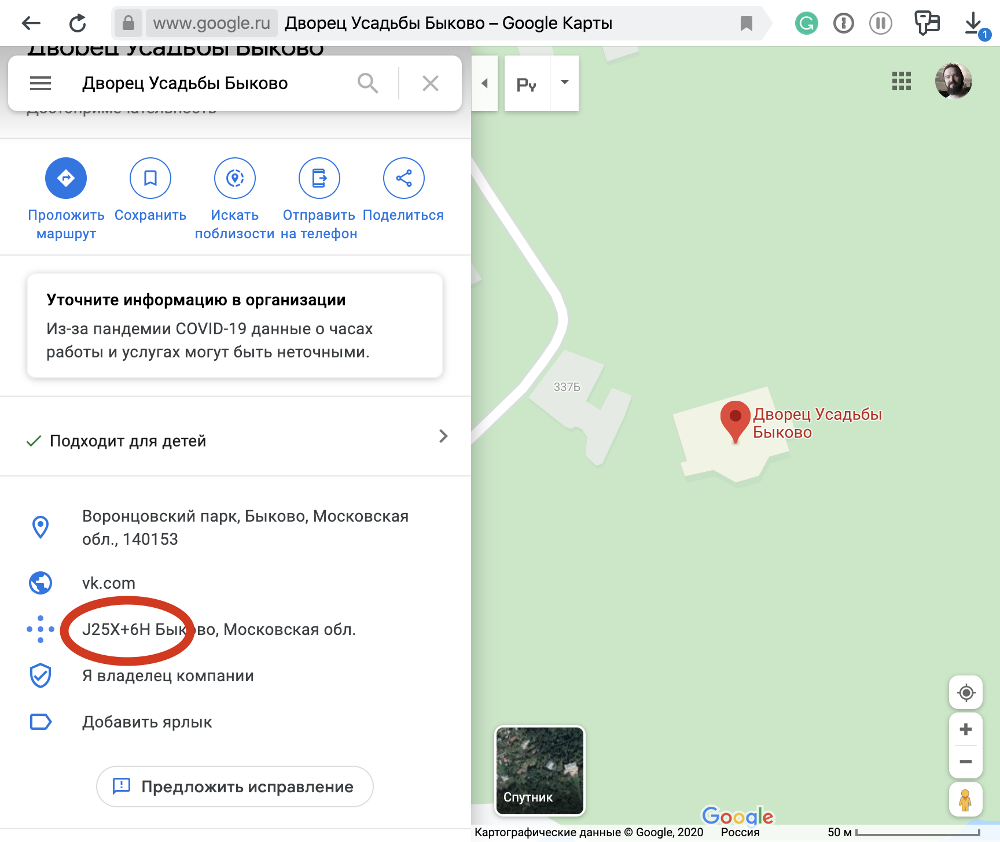

Lisp Project of the Day
open-location-code
You can support this project by donating at:


open-location-code
| Documentation | 😀 |
| Docstrings | 😀 |
| Tests | 😀 |
| Examples | 🥺 |
| RepositoryActivity | 😀 |
| CI | 🥺 |
This is an interesting way to encode coordinates on the planet Earth.
These codes can be short enough to remember them, and they are pronounceable. What is essential – they supported by Google.
For example, I have an architectural landmark in nearby Bykovo village - the Vorontcov-Dashkov's mansion. Its coordinates are 55.608093, 38.048927 or 55°36'29.1"N 38°02'56.1"E.
This building has no address, but we can get an "open location code" for its location on Google Maps:

J25X+6H is the shortened open location code for this location.
You can get the full code using latitude, longitude and one line of Lisp code:
POFTHEDAY> (open-location-code:encode
55.608093
38.048927)
"9G7WJ25X+6H"The code 9G7WJ25X+6H is full. It has all information to get back our latitude and longitude:
POFTHEDAY> (open-location-code:decode "9G7WJ25X+6H")
#<OPEN-LOCATION-CODE:CODE-AREA {1002BF7E13}>
:FULL
POFTHEDAY> (open-location-code:south-west-corner *)
6951/125 (55.608)
304391/8000 (38.048874)But for short code this will not work:
POFTHEDAY> (open-location-code:decode "J25X+6H")
#<OPEN-LOCATION-CODE:CODE-AREA {10067CAAB3}>
:SHORT
POFTHEDAY> (open-location-code:south-west-corner *)
76/125 (0.608, 304/5%)
391/8000 (0.048875, 391/80%)To get the coordinates, you need to "recover" the full code first. This is done using some reference point. For example, we can take the nearest village's coordinates as the reference point:
POFTHEDAY> (open-location-code:recover
"J25X+6H"
55.634068
38.044629)
"9G7WJ25X+6H"This is the same code we've received from mansion's coordinates. You can open the Google Maps and search the code 9G7WJ25X+6H to check it. In real life short codes are used together with the name of the nearest city, like J25X+6H Быково, Московская обл.
That is for today. For me, open location codes were an exciting discovery. Didn't hear about them before.
Brought to you by 40Ants under